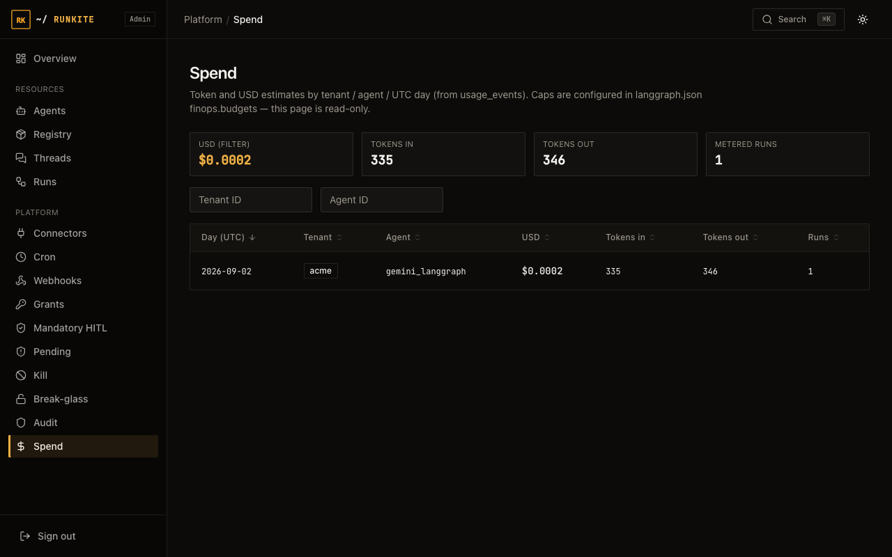

Spend (FinOps)
See spend in Admin and stop spend at admission — export and alerts included; not a full BI warehouse.
What ships now
-
Optional
finopsinlanggraph.json: UTC-day budgets,alerts.soft_pct,reservationholds (optionalhold_ttl, per-agentagentsoverrides), androuting.aliasescheaper-agent rewrite near soft threshold. Optionalon_hard_breach: cancel_inflightcancels pending/running runs when a hard day cap is already breached. -
Terminal
Output.usage→ SQLusage_events(LangGraph Python/TS; CrewAI/LlamaIndex/LangChain/AutoGen adapters when metrics exist). Webhook eventbudget_alert+ Admin alerts strip (approach alerts deduped once per UTC day per process). -
Admin
/admin/spend: summary, date filters, CSV/JSON export, open-holds KPI, alerts, routing banner. APIs:/admin-api/usage/{summary,alerts,holds,export}.
What is not shipped yet
- Streaming mid-run token metering (kill of inflight is opt-in via
on_hard_breach: cancel_inflight, not continuous spend tracking). - Auto-building a pricebook from vendor billing APIs; multi-currency / warehouse BI.
- Automatic model-catalog shopping (routing only uses configured
routing.aliases). - Frameworks with no token metrics still report empty
Output.usage(best-effort only).
Practical stance
Cost caps and metering sit next to kill, grants, and HITL. Wire
finops in config, watch /admin/spend, and hard-deny
when a day budget is gone.

usage_events.Related: Security · Kill & break-glass · Limitations · docs/configuration.md